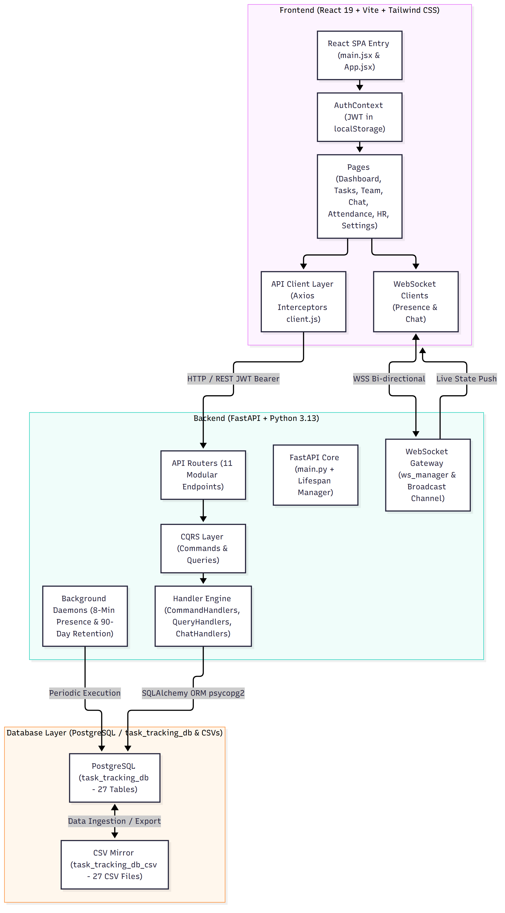
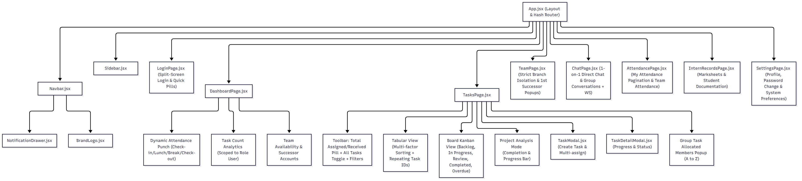
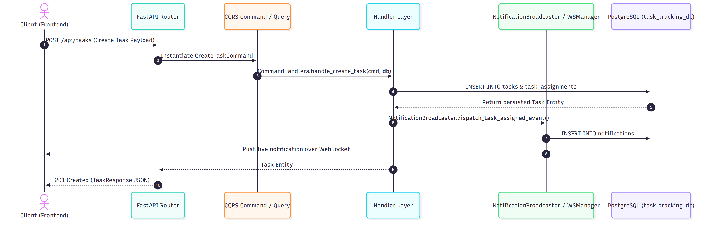
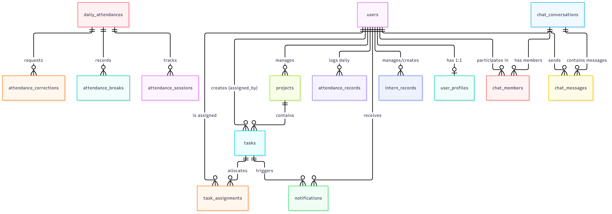

Task Tracking System · Full-Stack Technical Deep Dive · Ingage Technologies
The Task Tracking System is a full-stack application composed of three distinct layers: a React 19 SPA frontend, a FastAPI + Python 3.13 backend, and a PostgreSQL relational database (27 tables) with an accompanying CSV mirror for reporting and seed data.
Click any diagram below to open a full-screen popup view with high-resolution detail.

<div id="root">; loads /src/main.jsx.<AuthProvider> from AuthContext.jsx.user, token, isAuthenticated, loading). Reads from localStorage; verifies token freshness via authApi.getMe(). Exposes login(), logout(), ssoLogin(), refreshUser().window.location.hash). Auth Gate redirects to LoginPage.jsx when unauthenticated. Role Guard protects #hr. Renders Navbar.jsx + Sidebar.jsx + active page.
All pages except LoginPage.jsx require authentication. HR page additionally requires canAccessHR role check (HR or Admin only).
All network communication flows through frontend/src/api/client.js — an Axios instance with baseURL = '/api'. Requests carry JWT Bearer tokens injected by an outgoing interceptor. A response interceptor catches 401 Unauthorized and forces logout.
| Domain | Frontend API Object | Backend Router | CQRS Operation | Primary Responsibility |
|---|---|---|---|---|
| Auth | authApi |
auth.py |
Direct Query / JWT | Login, SSO role bypass, session verify (/auth/me), password hashing. |
| Dashboard | dashboardApi |
dashboard.py |
GetDashboardStatsQuery |
Role-scoped work count analytics, duty status, recent tasks, availability, dept workload. |
| Tasks | tasksApi |
tasks.py |
GetTasksQuery, CreateTaskCommand, UpdateTaskStatusCommand |
Paginated task list, Kanban board columns, task creation, multi-assignee assignment. |
| Projects | projectsApi |
projects.py |
Direct Query | Project list, dept filtering, employee workload breakdown & completion metrics. |
| Team | teamApi |
team.py |
GetHierarchyQuery, CreateUserCommand |
Branch-isolated hierarchy, 1st predecessor/successor discovery, assignees. |
| Attendance | attendanceApi |
attendance.py |
Direct Transaction | Dynamic check-in/lunch/break/check-out punch, today status, pagination, Saturday setting. |
| Chat | chatApi |
chat.py |
SendMessageCommand, GetMessagesQuery |
Real-time 1-on-1 and group chat conversations, member rosters, message delivery. |
| Notifications | notificationsApi |
notifications.py |
GetNotificationsQuery, MarkReadCommand |
Notification drawer, unread count polling/WS, mark read, 90-day retention audit. |
| Intern Docs | internRecordsApi |
intern_records.py |
Direct CRUD | 10th, 12th, college marksheets, address & emergency contact records for interns. |
| Presence | presenceApi |
presence.py |
Background Service | On Duty / Off Duty toggle, 8-min periodic availability scan trigger. |
backend/app/cqrs/commands/): Mutate state, validate business constraints, dispatch domain notifications.backend/app/cqrs/queries/): Read-only operations with filtering, pagination, and branch scoping.backend/app/cqrs/handlers/): Business logic fully decoupled from HTTP transport.
periodic_8min_presence_service — Sleeps 480 s, evaluates active employee availability, broadcasts state changes over /api/ws/presence. Records run status in service_execution_states and service_execution_logs.
notification_cleanup_background_scheduler — Checks every 60 s for Sunday 23:59 or Monday 06:00 AM trigger. Deletes read/unread notifications older than 90 days. Appends audit to service_execution_logs.
The database consists of 27 relational tables in PostgreSQL (task_tracking_db), mirrored in task_tracking_db_csv/ as 27 CSV files for reporting, seeding, and backup purposes.

The system enforces strict reporting-tree isolation. Each role can only see data within its own branch:
# 1. Verify complete branch isolation and hierarchy rules across all 5 roles
cd backend; .\venv\Scripts\python.exe test_full_verification.py
# 2. Verify attendance punch state transitions and Saturday toggle
cd backend; .\venv\Scripts\python.exe test_attendance_verify.py
# 3. Verify notification 90-day retention scheduler and audit logs
cd backend; .\venv\Scripts\python.exe test_notification_cleanup.py
# 4. Verify frontend build compilation with zero errors
npm.cmd --prefix frontend run buildhttp://localhost:5173/; verify "Remember my workspace" is unchecked by default.DB Access Policy: The task_tracking_db PostgreSQL database is read-only for architecture audit purposes. All seed credentials: admin123 for all 9 users.